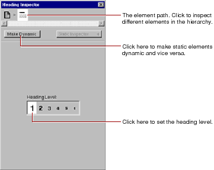

Table of Contents
Table of Contents  Next Section
Table of Contents
Next Section
Table of Contents  Previous Section
Previous Section
To open the Inspector, click . The Inspector's title and contents reflect the element you've selected in the component window. Each element has its own Inspector that allows you to set properties appropriate for the element. For example, the Heading Inspector shown here allows you to set the level of a heading element. Other elements have different properties that you can set.

The top of the window shows the element path to the selected element. Any element can be contained in a hierarchy of several levels of elements and can in turn contain other elements. Here, the element path shows that the heading element is contained in the page element, which is the top level of the hierarchy. When you click an icon in the element path, the appropriate Inspector for that element appears. In this case, if you click the page icon, the Page Attributes Inspector appears. (Note: If no element is selected, the Inspector shows Page Attributes by default.)
The Make Dynamic button in the Inspector allows you to convert an HTML element into a dynamic WebObjects element. Dynamic elements have a Make Static button, which allows them to be converted to their static counterparts. This feature is discussed in more detail in "Dynamic and Static Inspectors".
Table of Contents Next Section